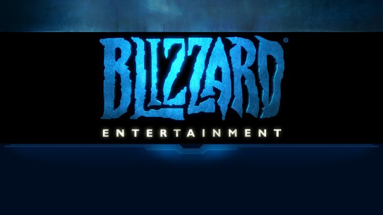

World of Warcraft

World of Warcraft é um jogo de computador do gênero MMORPG, desenvolvido pela Blizzard Entertainment e lançado em 2004. MMORPG é um tipo de jogo online que permite que muitos jogadores joguem juntos em um mundo virtual persistente. Os jogadores criam avatares para si mesmos e interagem com outros jogadores e elementos do mundo do jogo para completar missões, obter experiência e itens, e progredir no jogo. World of Warcraft é um MMORPG que permite que os jogadores criem personagens, escolham uma raça e classe, e explorem um mundo virtual repleto de missões, batalhas, e outras atividades. Os jogadores podem se juntar a guildas, formar grupos para desafiar masmorras ou lutar em campos de batalha, e participar de eventos especiais. Assim, World of Warcraft é um exemplo de um MMORPG popular que permite que jogadores de todo o mundo se conectem em um ambiente virtual para jogar juntos.
Blizzard Entertainment
A Blizzard Entertainment é uma empresa americana de jogos eletrônicos fundada em 1991. A empresa é conhecida por criar jogos icônicos como Diablo, StarCraft e Warcraft, incluindo o World of Warcraft, o seu jogo mais popular. A Blizzard desenvolveu o World of Warcraft como um MMORPG que se passa no universo ficcional de Warcraft, um mundo de fantasia medieval com dragões, elfos, humanos, orcs e outras criaturas. O jogo apresenta um vasto mundo aberto, com regiões únicas e distintas, que os jogadores podem explorar livremente. O World of Warcraft é jogado por milhões de pessoas em todo o mundo, que se conectam em servidores online para jogar juntos, formar guildas, fazer amizades e competir em atividades como batalhas PvP ou PvE. A Blizzard também é conhecida por manter o World of Warcraft constantemente atualizado, com expansões regulares que adicionam novos conteúdos e desafios ao jogo. O World of Warcraft também influenciou o gênero de jogos MMORPG, tornando-se um dos jogos mais bem-sucedidos e duradouros do gênero.